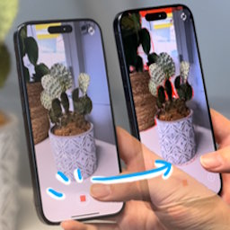
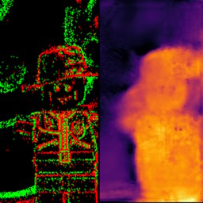

MEDIATED REALITY
üì∑ Imaging ‚ûú ü•Ω Displaying ‚ûú ü߆ Understanding
NEWS
RECENT PROJECTS

User-in-the-Loop View Sampling with Error Peaking Visualization
IEEE ICIP 2025 (To Appear)

Dense Depth from Event Focal Stack
IEEE/CVF WACV 2025